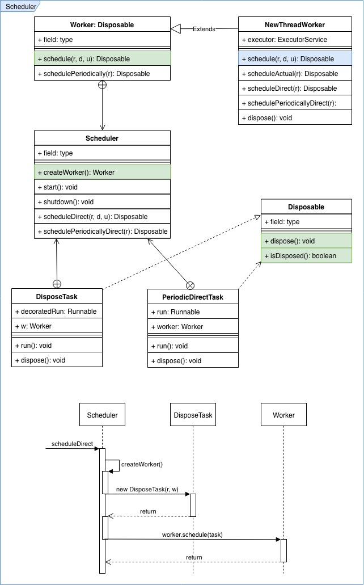

1. RxJava中的Scheduler
RxJava中的Scheduler用来执行Runnable任务的调度，Schedulers类提供了几种标准的Scheduler任务调度器。
Scheduler中Runnable任务的执行，被包装成了一个Worker对象，通过createWorker()方法创建一个Worker，它是一个抽象方法，需要由子类实现。Worker是一个抽象类，子类继承它并实现它的方法。
1.1. Scheduler
public abstract class Scheduler {
/**
* 检索或创建新的{@link Scheduler.Worker}，代表顺序执行的任务，当任务完成后，Worker应该被release。
* 通过{@link Scheduler.Worker#dispose()}来避免内存泄漏。
* Worker中的任务应该是有序并不重复的。
*/
@NonNull
public abstract Worker createWorker();
/**
* 调度给定的任务，没有延迟。该方法在多线程并发操作时是安全的，但是Scheduler并不保证任务被执行的顺序。
* @return 返回一个Disposable对象，调用者可以根据需求用此对象取消执行任务。
*/
@NonNull
public Disposable scheduleDirect(@NonNull Runnable run) {
return scheduleDirect(run, 0L, TimeUnit.NANOSECONDS);
}
/**
* 根据给定的延迟时间调度执行任务，该方法调用createWorker()获取一个Worker，根据Worker和
* Runnable创建一个DisposeTask对象，之后调用Worker.schedule开始执行任务。
* @return 返回一个Disposable对象，调用者可以根据需求用此对象取消执行任务。
*/
@NonNull
public Disposable scheduleDirect(@NonNull Runnable run, long delay, @NonNull TimeUnit unit) {
final Worker w = createWorker();
final Runnable decoratedRun = RxJavaPlugins.onSchedule(run);
DisposeTask task = new DisposeTask(decoratedRun, w);
w.schedule(task, delay, unit);
return task;
}
/**
* 根据给定的时间间隔，周期性的执行任务。
* 周期性的执行是固定的频率，第一次执行的时间延迟是{@code initialDelay}, 第二次是{@code initialDelay + period}, 第三次{@code initialDelay + 2 * period}, and so on.
* @return the Disposable that let's one cancel this particular delayed task.
*/
@NonNull
public Disposable schedulePeriodicallyDirect(@NonNull Runnable run, long initialDelay, long period, @NonNull TimeUnit unit) {
final Worker w = createWorker();
final Runnable decoratedRun = RxJavaPlugins.onSchedule(run);
PeriodicDirectTask periodicTask = new PeriodicDirectTask(decoratedRun, w);
Disposable d = w.schedulePeriodically(periodicTask, initialDelay, period, unit);
if (d == EmptyDisposable.INSTANCE) {
return d;
}
return periodicTask;
}
/**
* 开启Scheduler，启动线程开始执行任务。
*/
public void start() {
}
/**
* 停止Scheduler中的线程，停止接收任务并且清除引用的资源。
*/
public void shutdown() {
}
}
1.2. Worker
Scheduler的内部类Worker表示用于执行可运行任务的独立程序。Dispose Worker时应取消所有未完成的工作，并允许资源清理。
public abstract static class Worker implements Disposable {
/**
* 立即执行任务，没有延迟，该方法默认的实现会调用到{@link #schedule(Runnable, long, TimeUnit)}.
* @return a Disposable to be able to unsubscribe the action (cancel it if not executed)
*/
@NonNull
public Disposable schedule(@NonNull Runnable run) {
return schedule(run, 0L, TimeUnit.NANOSECONDS);
}
/**
* 根据指定的时间延迟执行任务，该方法需要由子类实现。
* @return a Disposable to be able to unsubscribe the action (cancel it if not executed)
*/
@NonNull
public abstract Disposable schedule(@NonNull Runnable run, long delay, @NonNull TimeUnit unit);
/**
* 根据指定的延迟时间和时间间隔执行任务。
* @return a Disposable to be able to unsubscribe the action (cancel it if not executed)
*/
@NonNull
public Disposable schedulePeriodically(@NonNull Runnable run, final long initialDelay, final long period, @NonNull final TimeUnit unit) {
final SequentialDisposable first = new SequentialDisposable();
final SequentialDisposable sd = new SequentialDisposable(first);
final Runnable decoratedRun = RxJavaPlugins.onSchedule(run);
final long periodInNanoseconds = unit.toNanos(period);
final long firstNowNanoseconds = now(TimeUnit.NANOSECONDS);
final long firstStartInNanoseconds = firstNowNanoseconds + unit.toNanos(initialDelay);
// 创建PeriodicTask并且通过schedule方法执行该任务。
// 在PeriodicTask中，不断的重复执行任务本身，以达到重复执行任务。
Disposable d = schedule(new PeriodicTask(firstStartInNanoseconds, decoratedRun, firstNowNanoseconds, sd, periodInNanoseconds), initialDelay, unit);
if (d == EmptyDisposable.INSTANCE) {
return d;
}
first.replace(d);
return sd;
}
}
1.3. PeriodicTask
周期性执行的任务。
/**
* 持有周期性执行的任务的状态和逻辑，用于决定什么时候执行下一次任务。
*/
final class PeriodicTask implements Runnable, SchedulerRunnableIntrospection {
@NonNull // 执行的具体任务
final Runnable decoratedRun;
@NonNull // 任务句柄，如果任务被取消，在该类中，需要停止执行下一次任务。
final SequentialDisposable sd;
final long periodInNanoseconds;
long count;
long lastNowNanoseconds;
long startInNanoseconds;
PeriodicTask(long firstStartInNanoseconds, @NonNull Runnable decoratedRun,
long firstNowNanoseconds, @NonNull SequentialDisposable sd, long periodInNanoseconds) {
this.decoratedRun = decoratedRun;
this.sd = sd;
this.periodInNanoseconds = periodInNanoseconds;
lastNowNanoseconds = firstNowNanoseconds;
startInNanoseconds = firstStartInNanoseconds;
}
@Override
public void run() {
decoratedRun.run();
// 任务未被取消
if (!sd.isDisposed()) {
long nextTick;
long nowNanoseconds = now(TimeUnit.NANOSECONDS);
// If the clock moved in a direction quite a bit, rebase the repetition period
if (nowNanoseconds + CLOCK_DRIFT_TOLERANCE_NANOSECONDS < lastNowNanoseconds
|| nowNanoseconds >= lastNowNanoseconds + periodInNanoseconds + CLOCK_DRIFT_TOLERANCE_NANOSECONDS) {
nextTick = nowNanoseconds + periodInNanoseconds;
/*
* Shift the start point back by the drift as if the whole thing
* started count periods ago.
*/
startInNanoseconds = nextTick - (periodInNanoseconds * (++count));
} else {
nextTick = startInNanoseconds + (++count * periodInNanoseconds);
}
lastNowNanoseconds = nowNanoseconds;
long delay = nextTick - nowNanoseconds;
// 继续执行decorateRun任务。
sd.replace(schedule(this, delay, TimeUnit.NANOSECONDS));
}
}
}
1.4. DisposeTask
可取消的任务，它是一个Runnable，可用于执行任务。
/**
* 可取消的Task任务，
*/
static final class DisposeTask implements Disposable, Runnable, SchedulerRunnableIntrospection {
@NonNull
final Runnable decoratedRun;
@NonNull
final Worker w;
@Nullable
Thread runner;
DisposeTask(@NonNull Runnable decoratedRun, @NonNull Worker w) {
this.decoratedRun = decoratedRun;
this.w = w;
}
@Override
public void run() {
runner = Thread.currentThread();
try { // 执行具体的Runnable
decoratedRun.run();
} finally {
dispose(); // 任务执行完成，dispose()
runner = null;
}
}
@Override
public void dispose() {
// 如果Worker是NewThreadWorker，则调用它的shutdown停止它，否则通过dispose停止。
if (runner == Thread.currentThread() && w instanceof NewThreadWorker) {
((NewThreadWorker)w).shutdown();
} else {
w.dispose();
}
}
@Override
public boolean isDisposed() {
return w.isDisposed();
}
}
从Scheduler和Worker常用的方法及其内部类可以看出，当要执行一个任务时，首先通过Scheduler.createWorker()把任务封装成一个Worker，然后通过Scheduler.scheduleDirect() -> Worker.schedule()方法执行任务。
Scheduler.createWorker() 和 Worker.schedule() 方法为抽象方法，需要由其子类实现。
1.5. Structure
整体架构流程图
